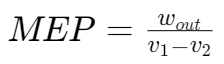

热机循环 | Engine Cycles
分类 | Catagories
Thermodynamic cycles:
- power cycles: output work
- refrigeration cycles: take heat from low temperature place
- gas cycles: the working fluid remains in the gaseous phase
- vapour cycles: the working fluid exists in vapour phase during one part of the cycle and in liquid phase during another part
- closed cycles: working fluid is returned to the initial state at the end of the cycle and is re circulated
- open cycles: the working fluid is renewed at the end of each cycle instead of being re circulated For example, automobile engines, the combustion gases are exhausted and replaced by fresh air fuel mixture at the end The same working fluid does not go through a whole cycle
Heat engines:
- Internal combustion engines: Burning the fuel within the piston cylinder system boundaries
- External combustion engines: Heat is supplied to the working fluid from an external source such as a furnace, a geothermal well, a nuclear reactor, or even the sun
热机效率 | Thermal efficiency of engines
奥托循环和迪塞尔循环 | Otto Cycle and Diesel Cycle
TDC - Top dead centre
BDC - Bottom dead centre
奥托循环 - 理想火花塞点火引擎 | Otto Cycle - ideal cycle for spark ignition engines

压缩比 r
r = vmax / vmin = vBDC / vTDC
平均有效压力 | Mean effective pressure (MEP)
理想循环过程 | Ideal processes

- 1-2 Isentropic compression
- 2-3 Constant-volume heat addition
- 3-4 Isentropic expansion
- 4-1 Constant-volume heat rejection
迪塞尔循环 - 理想压缩点火引擎 | Diesel Cycle - ideal cycle for compression ignition reciprocating engines


- 1-2 isentropic compression,
- 2-3 constant pressure heat addition
- 3-4 isentropic expansion
- 4-1 constant volume heat rejection.
cut-off ratio
compression ratio
焦耳循环 | Joule Cycle


Tour internally reversible processes:
- 1-2 Isentropic compression (in a compressor)
- 2-3 Constant-pressure heat addition
- 3-4 Isentropic expansion (in a turbine)
- 4-1 Constant-pressure heat rejection
(qin - qout) + (win - wout) = hexit - hinlet

焦耳循环的回功比 | Joule Cycle - back work ratio
Back work ratio: fraction of the turbine work has to be used to drive the compressor.

例题1
An ideal Otto cycle has a compression ratio of 8. At the beginning of the compression process, air is at 100 kPa and 17°C, and 800 kJ/kg of heat is transferred to air during the constant-volume heat-addition process. Use cold-air-standard assumptions, determine:
(a) the maximum temperature and pressure that occur during the cycle,
(b) the net-work output,
(c) the thermal efficiency, and
(d) the mean effective pressure for the cycle.

(a) 由压缩比 得
对于压缩过程：
使用理想气体的恒熵过程公式
可得压缩后气体温度
再由理想气体公式
可得压缩后气体压强
对于等容升温过程：
由 得
升温后温度
由理想气体公式，在等容情况下
升温后压强
由于奥托循环性质，等容升温后温度和压强最高。
(b) 对于奥托循环，净功输出
对于等容降温过程：
由公式
等熵扩张后温度
则降温释放热量
(c) 奥托循环的热机效率
(d) 由公式
压缩过程开始时气体体积
由MEP,,公式
单位质量平均有效压力 
例题2
An ideal Diesel cycle with air as the working fluid has a compression ratio of 18 and a cut-off ratio of 2. At the beginning of the compression process, the working fluid is at 100kPa, 27°C,and 1917cm3. Using the cold-air standard assumptions,
determine:
(a) the temperature and pressure of air at the end of each process,
(b) the net work output and the thermal efficiency,
(c) the mean effective pressure.
(constants: )

(a) 由压缩比
对于1-2等熵压缩过程：
由理想气体等熵过程公式

由理想气体等熵过程公式
对于2-3等压吸热过程：

由理想气体公式 可得
对于3-4等熵扩张过程：
(b) ⚠️ 由于本题问的是做功输出而非做功输出速率，故要计算质量。
由公式 
由于2-3过程为等压过程，使用定压比热  计算
计算
由于4-1过程为等容过程，使用定容比热  计算
计算
则净做功输出 
热机效率
(c)